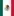
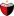
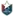
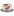
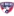
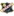
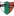
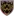

🏆 EURO 2024
| Date | Fixture  Bold-faced team is selected by AIGoalie to win. Bold-faced team is selected by AIGoalie to win. |
Odds Pre-match odds of the selected team winning. Note that odds are fetched once per day at 00:00 GMT, meaning some matches may have live odds. Also odds may not be available for all leagues. |
Win How confident AIGoalie is that the selected team will win. Low confidence indicates unpredictability of the match. ▼ |
Result Whether the selected team won, drew, or lost. |
Over The minimum number of goals predicted by AIGoalie. ⚽ = over 0.5 ⚽⚽ = over 1.5 ⚽⚽⚽ = over 2.5 ... ► |
Alerts Home 🏥 = Considerable injuries 🏥🏥 = Major injuries 📉 = Dip in form Note, you may see injuries when expanding match but no alert here, meaning the model does not consider them important. |
Alerts Away 🏥 = Considerable injuries 🏥🏥 = Major injuries 📉 = Dip in form Note, you may see injuries when expanding match but no alert here, meaning the model does not consider them important. |
|
|---|---|---|---|---|---|---|---|---|
| Sun. 23 Jun. | Switzerland  1:1  Germany Form: DDWL Form: WDWL |
-0.68 vs 0.67 | 1.7 | 57% | ⁃ | ⚽ 1.79 |
📉 Home team has a dip in form recently | 📉 Away team has a dip in form recently |
| Sun. 23 Jun. | Scotland  0:1 Hungary Form: DLDL Form: WLLW |
-0.21 vs 0.2 | 2.6 | 26% | ✓ | ⚽⚽ 2.07 |
📉 Home team has a dip in form recently | 📉 Away team has a dip in form recently |
🏆 Copa América 2024
| Date | Fixture Bold-faced team is selected by AIGoalie to win. |
Odds Pre-match odds of the selected team winning. Note that odds are fetched once per day at 00:00 GMT, meaning some matches may have live odds. Also odds may not be available for all leagues. |
Win How confident AIGoalie is that the selected team will win. Low confidence indicates unpredictability of the match. ▼ |
Result Whether the selected team won, drew, or lost. |
Over The minimum number of goals predicted by AIGoalie. ⚽ = over 0.5 ⚽⚽ = over 1.5 ⚽⚽⚽ = over 2.5 ... ► |
Alerts Home 🏥 = Considerable injuries 🏥🏥 = Major injuries 📉 = Dip in form Note, you may see injuries when expanding match but no alert here, meaning the model does not consider them important. |
Alerts Away 🏥 = Considerable injuries 🏥🏥 = Major injuries 📉 = Dip in form Note, you may see injuries when expanding match but no alert here, meaning the model does not consider them important. |
|
|---|---|---|---|---|---|---|---|---|
| Sun. 23 Jun. | United States  2:0  Bolivia Form: DWLL Form: LLLL |
0.74 vs -1.82 | 59% | ✓ | ⚽⚽⚽ 3.07 |
📉 Home team has a dip in form recently | 📉 Away team has a dip in form recently | |
| Sun. 23 Jun. | Mexico  1:0 Jamaica Form: LWLD Form: LLLW |
0.18 vs -1.46 | 1.68 | 25% | ✓ | ⚽ 1.6 |
📉 Home team has a dip in form recently | 🏥🏥 📉 Away team has MAJOR injuries and a dip in form recently |
🌍 Global
| Date | Fixture Bold-faced team is selected by AIGoalie to win. |
Odds Pre-match odds of the selected team winning. Note that odds are fetched once per day at 00:00 GMT, meaning some matches may have live odds. |
Win How confident AIGoalie is that the selected team will win. Low confidence indicates unpredictability of the match. ▼ |
Result Whether the selected team won, drew, or lost. |
Over The minimum number of goals predicted by AIGoalie. ⚽ = over 0.5 ⚽⚽ = over 1.5 ⚽⚽⚽ = over 2.5 ... ► |
Alerts Home 🏥 = Considerable injuries 🏥🏥 = Major injuries 📉 = Dip in form Note, you may see injuries when expanding match but no alert here, meaning the model does not consider them important. |
Alerts Away 🏥 = Considerable injuries 🏥🏥 = Major injuries 📉 = Dip in form Note, you may see injuries when expanding match but no alert here, meaning the model does not consider them important. |
|
|---|---|---|---|---|---|---|---|---|
| Sun. 23 Jun. | Tainan City Taiwan Steel  3:1 Taipei Vikings Form: WWWD Form: LLWD |
1.73 vs -2.54 | 1.05 | 77% | ✓ | ⚽⚽⚽⚽⚽ 5.04 |
📉 Away team has a dip in form recently | |
| Sun. 23 Jun. | Sociedade Esportiva Palmeiras  1:1'  Esporte Clube Juventude Form: LWDW Form: LWLL |
1.33 vs -2.43 | 73% | ⚽ 1.51 |
🏥🏥 Home team has MAJOR injuries | 📉 Away team has a dip in form recently | ||
| Sun. 23 Jun. | Vålerenga Fotball Elite  8:0  Sandnes Ulf Form: WWDW Form: LLLL |
1.3 vs -2.07 | 73% | ✓ | ⚽⚽⚽ 3.53 |
📉 Away team has a dip in form recently | ||
| Sun. 23 Jun. | Ravshan Kulob  0:1  Istiqlol Dushanbe Form: WDDW Form: WWWW |
-1.55 vs 1.13 | 71% | ✓ | ⚽ 1.58 |
📉 Home team has a dip in form recently | ||
| Sun. 23 Jun. | Dynamic Herb Cebu FC  7:0  Manila Montet FC Form: WWWL Form: LLLL |
1.09 vs -2.09 | 71% | ✓ | ⚽⚽⚽⚽⚽⚽⚽⚽ 8.54 |
📉 Home team has a dip in form recently | 📉 Away team has a dip in form recently | |
| Sun. 23 Jun. | TB Tvøroyri  3:1  AB Argir Form: DWDW Form: DWLL |
1.05 vs -1.92 | 71% | ✓ | ⚽ 1.64 |
📉 Away team has a dip in form recently | ||
| Sun. 23 Jun. | Víkingur Gøta  3:0 B68 Toftir Form: WLLW Form: DLLD |
0.94 vs -1.88 | 1.05 | 68% | ✓ | ⚽⚽ 2.8 |
📉 Home team has a dip in form recently | 📉 Away team has a dip in form recently |
| Sun. 23 Jun. | Alianza Universidad  3:0 Club Juan Pablo II Form: DWWW Form: WWLW |
0.84 vs -1.57 | 1.19 | 63% | ✓ | ⚽⚽ 2.17 |
📉 Away team has a dip in form recently | |
| Sun. 23 Jun. | United States 2:0 Bolivia Form: DWLL Form: LLLL |
0.74 vs -1.82 | 59% | ✓ | ⚽⚽⚽ 3.07 |
📉 Home team has a dip in form recently | 📉 Away team has a dip in form recently | |
| Sun. 23 Jun. | Switzerland 1:1 Germany Form: DDWL Form: WDWL |
-0.68 vs 0.67 | 1.7 | 57% | ⁃ | ⚽ 1.79 |
📉 Home team has a dip in form recently | 📉 Away team has a dip in form recently |
| Sun. 23 Jun. | Skövde AIK  0:2  Sandvikens IF Form: DLLL Form: WWWL |
0.62 vs -1.18 | 3.6 | 55% | ❌ | ⚽⚽ 2.45 |
📉 Home team has a dip in form recently | 📉 Away team has a dip in form recently |
| Sun. 23 Jun. | CA Defensores Unidos (Zarate)  2:1  CA Colón Form: DLWL Form: DLDD |
-1.44 vs 0.61 | 1.96 | 54% | ❌ | ⚽ 1.32 |
📉 Home team has a dip in form recently | 📉 Away team has a dip in form recently |
| Sun. 23 Jun. | Blaublitz Akita 3:1  Shimizu S-Pulse Form: LWLL Form: LLWW |
-1.21 vs 0.58 | 2.1 | 53% | ❌ | ⚽ 1.25 |
📉 Home team has a dip in form recently | 📉 Away team has a dip in form recently |
| Sun. 23 Jun. | Cerro Largo FC  0:4  Club Nacional Form: DWLW Form: LWWD |
-1.29 vs 0.55 | 1.87 | 52% | ✓ | ⚽ 1.71 |
📉 Home team has a dip in form recently | |
| Sun. 23 Jun. | FK Kauno Zalgiris  4:1  FC Hegelmann Form: WWLW Form: LDWW |
0.55 vs -0.95 | 2.8 | 52% | ✓ | ⚽⚽ 2.14 |
📉 Home team has a dip in form recently | |
| Sun. 23 Jun. | Forge FC  2:1  Valour FC Form: DWLD Form: LLWL |
0.54 vs -1.36 | 1.52 | 52% | ✓ | ⚽⚽ 2.17 |
📉 Home team has a dip in form recently | 📉 Away team has a dip in form recently |
| Sun. 23 Jun. | FK Zalgiris Vilnius  4:0  FK Suduva Marijampole Form: WWLL Form: LLLD |
0.54 vs -1.26 | 52% | ✓ | ⚽⚽ 2.44 |
📉 Home team has a dip in form recently | 📉 Away team has a dip in form recently | |
| Sun. 23 Jun. | ÍF Fuglafjördur  3:4  B36 Tórshavn Form: LLLL Form: DLWW |
-1.2 vs 0.51 | 1.15 | 50% | ✓ | ⚽⚽ 2.92 |
📉 Home team has a dip in form recently | 📉 Away team has a dip in form recently |
| Sun. 23 Jun. | Los Angeles FC  6:2  San Jose Earthquakes Form: DWWW Form: LLLW |
0.51 vs -1.48 | 1.35 | 50% | ✓ | ⚽⚽ 2.48 |
📉 Away team has a dip in form recently | |
| Sun. 23 Jun. | Breidablik Kópavogur  1:1  ÍA Akranes Form: DLLD Form: WLLD |
0.51 vs -0.92 | 1.44 | 50% | ⁃ | ⚽⚽⚽ 3.12 |
📉 Home team has a dip in form recently | 📉 Away team has a dip in form recently |
| Sun. 23 Jun. | CD O'Higgins  1:1'  CSD Colo-Colo Form: WWDL Form: WDWD |
-1.37 vs 0.5 | 1.04 | 50% | ⚽ 1.79 |
📉 Home team has a dip in form recently | 📉 Away team has a dip in form recently | |
| Sun. 23 Jun. | Dinamo Minsk  2:1  Neman Grodno Form: WWWW Form: WLWW |
0.5 vs -0.95 | 50% | ✓ | ⚽ 1.93 |
📉 Away team has a dip in form recently | ||
| Sun. 23 Jun. | FK Molodechno  3:0  Volna Pinsk Form: LWDW Form: WLWW |
0.46 vs -1.05 | 47% | ✓ | ⚽ 1.99 |
📉 Away team has a dip in form recently | ||
| Sun. 23 Jun. | Liverpool FC Montevideo  1:0  CA Boston River Form: LLWL Form: DLLW |
0.46 vs -1.03 | 2.16 | 47% | ✓ | ⚽ 1.4 |
📉 Home team has a dip in form recently | 📉 Away team has a dip in form recently |
| Sun. 23 Jun. | Louisville City FC  2:5  Rhode Island FC Form: WLWL Form: DWWD |
0.44 vs -1.24 | 45% | ❌ | ⚽⚽⚽ 3.85 |
📉 Home team has a dip in form recently | ||
| Sun. 23 Jun. | Columbus Crew  4:0  Sporting Kansas City Form: WWWW Form: LWLW |
0.43 vs -1.25 | 44% | ✓ | ⚽⚽ 2.89 |
📉 Away team has a dip in form recently | ||
| Sun. 23 Jun. | Stabæk Fotball  1:0  Levanger FK Form: WWLW Form: LDWL |
0.37 vs -0.83 | 40% | ✓ | ⚽⚽ 2.84 |
📉 Home team has a dip in form recently | 📉 Away team has a dip in form recently | |
| Sun. 23 Jun. | Torpedo-BelAZ Zhodino  1:0 Isloch Minsk Region Form: WWLW Form: WLDW |
0.34 vs -1.05 | 37% | ✓ | 😴 0.8 |
📉 Home team has a dip in form recently | 📉 Away team has a dip in form recently | |
| Sun. 23 Jun. | NSÍ Runavík  4:0  EB/Streymur Form: LLLW Form: WWLW |
0.34 vs -1.06 | 1.17 | 37% | ✓ | ⚽⚽ 2.67 |
📉 Home team has a dip in form recently | 📉 Away team has a dip in form recently |
| Sun. 23 Jun. | Orlando City SC  4:2  Chicago Fire FC Form: WLWW Form: LLWL |
0.34 vs -1.2 | 37% | ✓ | ⚽⚽ 2.14 |
📉 Home team has a dip in form recently | 📉 Away team has a dip in form recently | |
| Sun. 23 Jun. | Red Bull Bragantino  1:1'  Esporte Clube Vitória Form: LDWL Form: WLLW |
0.33 vs -1.18 | 36% | ⚽ 1.62 |
📉 Home team has a dip in form recently | 📉 Away team has a dip in form recently | ||
| Sun. 23 Jun. | IK Brage  5:0  GIF Sundsvall Form: WLWD Form: LDLL |
0.32 vs -1.22 | 1.69 | 36% | ✓ | ⚽ 1.57 |
📉 Home team has a dip in form recently | 📉 Away team has a dip in form recently |
| Sun. 23 Jun. | FA Siauliai  0:0  FK Banga Gargzdai Form: DDWW Form: DLWD |
0.32 vs -1.19 | 1.74 | 36% | ⁃ | ⚽ 1.3 |
🏥 Home team has considerable injuries | 📉 Away team has a dip in form recently |
| Sun. 23 Jun. | New Taipei City Hang Yuan FC 1:1  Ming Chuan University Form: LLDD Form: WLDL |
0.31 vs -1.24 | 1.16 | 35% | ⁃ | ⚽ 1.21 |
📉 Home team has a dip in form recently | 📉 Away team has a dip in form recently |
| Sun. 23 Jun. | Varbergs BoIS  4:3 Gefle IF Form: DWWL Form: LLLD |
0.31 vs -1.29 | 1.92 | 34% | ✓ | ⚽⚽ 2.16 |
📉 Home team has a dip in form recently | 📉 Away team has a dip in form recently |
| Sun. 23 Jun. | Vancouver FC 00:00  HFX Wanderers FC Form: DLWD Form: DWWL |
0.3 vs -1.05 | 2.08 | 34% | ⚽⚽ 2.03 |
📉 Home team has a dip in form recently | 📉 Away team has a dip in form recently | |
| Sun. 23 Jun. | Bucheon FC 1995  0:4  Chungbuk Cheongju FC Form: LWLD Form: LWDL |
0.3 vs -0.98 | 2.32 | 34% | ❌ | 😴 0.74 |
📉 Home team has a dip in form recently | 📉 Away team has a dip in form recently |
| Sun. 23 Jun. | KA Akureyri  3:2  Fram Reykjavík Form: LLWW Form: DWWL |
0.3 vs -1.16 | 1.91 | 34% | ✓ | ⚽⚽ 2.23 |
📉 Home team has a dip in form recently | 📉 Away team has a dip in form recently |
| Sun. 23 Jun. | FH Hafnarfjördur  3:1  Fylkir Reykjavík Form: DDWL Form: WLWL |
0.27 vs -0.92 | 1.59 | 32% | ✓ | ⚽⚽ 2.87 |
📉 Home team has a dip in form recently | 📉 Away team has a dip in form recently |
| Sun. 23 Jun. | North Carolina FC  0:0  Pittsburgh Riverhounds SC Form: WDLW Form: LDLL |
0.27 vs -0.99 | 32% | ⁃ | ⚽ 1.34 |
📉 Home team has a dip in form recently | 📉 Away team has a dip in form recently | |
| Sun. 23 Jun. | New York Red Bulls  3:0  Toronto FC Form: DWDD Form: LLLL |
0.27 vs -1.37 | 32% | ✓ | ⚽⚽ 2.37 |
📉 Home team has a dip in form recently | 🏥 📉 Away team has considerable injuries and a dip in form recently | |
| Sun. 23 Jun. | FK Aktobe  1:0  Shakhter Karaganda Form: LWLL Form: LLLW |
0.25 vs -1.25 | 1.15 | 30% | ✓ | ⚽ 1.55 |
📉 Home team has a dip in form recently | 📉 Away team has a dip in form recently |
| Sun. 23 Jun. | Taiwan Power Company  4:0 Taiwan Leopard Cat FC Form: LWWL Form: LWLD |
0.24 vs -0.88 | 1.23 | 30% | ✓ | ⚽ 1.97 |
📉 Home team has a dip in form recently | 📉 Away team has a dip in form recently |
| Sun. 23 Jun. | FC Cincinnati  1:2  New England Revolution Form: LWWW Form: WLWL |
0.24 vs -1.26 | 29% | ❌ | ⚽⚽⚽ 3.28 |
🏥 📉 Away team has considerable injuries and a dip in form recently | ||
| Sun. 23 Jun. | Hokkaido Consadole Sapporo  0:1  Yokohama F. Marinos Form: LLLL Form: LLLL |
-1.23 vs 0.24 | 2.1 | 29% | ✓ | ⚽⚽ 2.63 |
🏥🏥 📉 Home team has MAJOR injuries and a dip in form recently | 📉 Away team has a dip in form recently |
| Sun. 23 Jun. | Club Ferro Carril Oeste  2:2  CA Estudiantes Form: WLDD Form: LDDL |
0.24 vs -1.02 | 1.86 | 29% | ⁃ | ⚽ 1.01 |
📉 Home team has a dip in form recently | 📉 Away team has a dip in form recently |
| Sun. 23 Jun. | Deportivo Binacional  2:0  Academia Deportiva Cantolao Form: LWWW Form: DLLW |
0.22 vs -0.89 | 27% | ✓ | ⚽ 1.44 |
📉 Away team has a dip in form recently | ||
| Sun. 23 Jun. | IK Oddevold  1:1  Degerfors IF Form: LDLL Form: DWWL |
-0.99 vs 0.22 | 2.42 | 27% | ⁃ | ⚽ 1.78 |
📉 Home team has a dip in form recently | 📉 Away team has a dip in form recently |
| Sun. 23 Jun. | Östersunds FK  1:0  Utsiktens BK Form: LDWL Form: LLLL |
0.21 vs -0.91 | 2.4 | 27% | ✓ | ⚽ 1.39 |
📉 Home team has a dip in form recently | 📉 Away team has a dip in form recently |
| Sun. 23 Jun. | Miami FC  2:2  Loudoun United FC Form: LDLL Form: DDWW |
0.21 vs -0.98 | 1.01 | 27% | ⁃ | ⚽⚽ 2.01 |
📉 Home team has a dip in form recently | |
| Sun. 23 Jun. | Scotland 0:1 Hungary Form: DLDL Form: WLLW |
-0.21 vs 0.2 | 2.6 | 26% | ✓ | ⚽⚽ 2.07 |
📉 Home team has a dip in form recently | 📉 Away team has a dip in form recently |
| Sun. 23 Jun. | Mexico 1:0 Jamaica Form: LWLD Form: LLLW |
0.18 vs -1.46 | 1.68 | 25% | ✓ | ⚽ 1.6 |
📉 Home team has a dip in form recently | 🏥🏥 📉 Away team has MAJOR injuries and a dip in form recently |
| Sun. 23 Jun. | CA Chaco For Ever  0:1  Club de Gimnasia y Tiro Form: DLLL Form: WWWD |
0.17 vs -1.14 | 2.16 | 24% | ❌ | 😴 0.8 |
📉 Home team has a dip in form recently | |
| Sun. 23 Jun. | Aalesunds FK 1:2  Ranheim IL Form: LDLL Form: LDWW |
0.13 vs -0.8 | 2.38 | 21% | ❌ | ⚽⚽ 2.38 |
📉 Home team has a dip in form recently | |
| Sun. 23 Jun. | Philadelphia Union  0:2  Charlotte FC Form: LLLD Form: DWLL |
0.13 vs -0.99 | 20% | ❌ | ⚽ 1.89 |
🏥 📉 Home team has considerable injuries and a dip in form recently | 📉 Away team has a dip in form recently | |
| Sun. 23 Jun. | FC Tulsa  0:0  Sacramento Republic FC Form: WWDL Form: LDWL |
-0.62 vs 0.13 | 20% | ⁃ | ⚽ 1.38 |
📉 Home team has a dip in form recently | 📉 Away team has a dip in form recently | |
| Sun. 23 Jun. | Clube Atlético Mineiro  postponed  Fortaleza Esporte Clube Form: LDLW Form: WWLW |
0.12 vs -1.3 | 1.76 | 20% | ⚽⚽ 2.45 |
🏥 📉 Home team has considerable injuries and a dip in form recently | 🏥 📉 Away team has considerable injuries and a dip in form recently | |
| Sun. 23 Jun. | RCD Espanyol Barcelona 2:0 Real Oviedo Form: WDLW Form: DWWL |
0.1 vs -0.85 | 18% | ✓ | 😴 0.99 |
📉 Home team has a dip in form recently | 📉 Away team has a dip in form recently | |
| Sun. 23 Jun. | Minnesota United FC  0:1  Austin FC Form: LLLL Form: DWLW |
0.09 vs -1.06 | 17% | ❌ | ⚽⚽ 2.28 |
📉 Home team has a dip in form recently | 📉 Away team has a dip in form recently | |
| Sun. 23 Jun. | Phoenix Rising FC  0:0  Charleston Battery Form: DDLL Form: LDWW |
0.09 vs -0.72 | 2.72 | 17% | ⁃ | ⚽ 1.68 |
📉 Home team has a dip in form recently | |
| Sun. 23 Jun. | BATE 2 Borisov  1:0  Bumprom Gomel Form: LWLW Form: WLDW |
0.07 vs -0.68 | 16% | ✓ | ⚽ 1.72 |
📉 Home team has a dip in form recently | 📉 Away team has a dip in form recently | |
| Sun. 23 Jun. | Gimpo FC  1:0  Busan IPark Form: WDDD Form: DLDD |
0.07 vs -0.66 | 15% | ✓ | ⚽ 1.26 |
📉 Home team has a dip in form recently | 📉 Away team has a dip in form recently | |
| Sun. 23 Jun. | Portland Timbers  2:0  Vancouver Whitecaps FC Form: WWLW Form: LWWD |
0.06 vs -0.76 | 2.24 | 15% | ✓ | ⚽⚽⚽ 3.15 |
📉 Home team has a dip in form recently | |
| Sun. 23 Jun. | Las Vegas Lights FC  1:1  Memphis 901 FC Form: DDWW Form: DWWL |
0.06 vs -0.85 | 2.48 | 15% | ⁃ | ⚽⚽ 2.31 |
📉 Away team has a dip in form recently | |
| Sun. 23 Jun. | FK Baranovichi  1:3  Niva Dolbizno Form: LLWD Form: WWDD |
-0.52 vs 0.06 | 14% | ✓ | ⚽⚽ 2.44 |
📉 Home team has a dip in form recently | 📉 Away team has a dip in form recently | |
| Sun. 23 Jun. | Mjøndalen IF  0:3  Egersunds IK Form: DLWL Form: WDDW |
-0.37 vs 0.05 | 2.26 | 14% | ✓ | ⚽⚽ 2.99 |
📉 Home team has a dip in form recently | 📉 Away team has a dip in form recently |
| Sun. 23 Jun. | Loyola FC  09:00  One Taguig FC Form: WLLL Form: WWWD |
-0.54 vs 0.04 | 13% | ⚽⚽⚽⚽⚽⚽ 6.27 |
📉 Home team has a dip in form recently | |||
| Sun. 23 Jun. | Incheon United  1:3  Pohang Steelers Form: LLDD Form: WDWD |
0.02 vs -0.8 | 2.7 | 11% | ❌ | ⚽ 1.93 |
📉 Home team has a dip in form recently | 📉 Away team has a dip in form recently |
| Sun. 23 Jun. | FK Lida  0:1  FK Orsha Form: WLDL Form: WWDW |
0.0 vs -1.0 | 10% | ❌ | ⚽ 1.92 |
🏥 📉 Home team has considerable injuries and a dip in form recently | ||
| Sun. 23 Jun. | CA Racing (Córdoba)  1:2  Club Social y Atlético Guillermo Brown Form: DLWW Form: DWDD |
-0.02 vs -0.87 | 1.44 | 10% | ❌ | ⚽ 1.09 |
📉 Home team has a dip in form recently | 📉 Away team has a dip in form recently |
| Sun. 23 Jun. | FC Zhenis Astana  1:3  Ordabasy Shymkent Form: LDLW Form: WWWD |
-0.04 vs -0.57 | 9% | ❌ | ⚽ 1.77 |
📉 Home team has a dip in form recently | ||
| Sun. 23 Jun. | CA San Telmo  0:0  CA Mitre Form: WDLD Form: DDWL |
-0.04 vs -0.71 | 2.02 | 9% | ⁃ | 😴 0.62 |
📉 Home team has a dip in form recently | 📉 Away team has a dip in form recently |
| Sun. 23 Jun. | Tokushima Vortis  1:0  Mito HollyHock Form: LWDW Form: WLDL |
-0.06 vs -0.79 | 9% | ✓ | 😴 0.94 |
📉 Away team has a dip in form recently | ||
| Sun. 23 Jun. | CD Maipú  0:2  CA Chacarita Juniors Form: WLLW Form: LWWD |
-0.44 vs -0.06 | 1.64 | 9% | ✓ | ⚽ 1.9 |
📉 Home team has a dip in form recently | |
| Sun. 23 Jun. | Seattle Sounders FC  3:2  FC Dallas Form: DWWW Form: LLWL |
-0.07 vs -1.09 | 1.62 | 9% | ✓ | ⚽ 1.6 |
🏥 📉 Away team has considerable injuries and a dip in form recently | |
| Sun. 23 Jun. | Esporte Clube Bahia  4:1  Cruzeiro Esporte Clube Form: WLWL Form: LWLL |
-0.08 vs -0.92 | 8% | ✓ | ⚽⚽ 2.22 |
📉 Home team has a dip in form recently | 🏥 📉 Away team has considerable injuries and a dip in form recently | |
| Sun. 23 Jun. | Bryne FK  5:3  Lyn 1896 FK Form: WLWL Form: DWLL |
-0.08 vs -0.42 | 8% | ✓ | ⚽⚽ 2.0 |
📉 Home team has a dip in form recently | 📉 Away team has a dip in form recently | |
| Sun. 23 Jun. | Åsane Fotball  1:4  Moss FK Form: LLWL Form: WLWW |
-0.09 vs -0.62 | 8% | ❌ | ⚽ 1.95 |
📉 Home team has a dip in form recently | 📉 Away team has a dip in form recently | |
| Sun. 23 Jun. | CA Patronato  4:0  CA Agropecuario Form: DWLW Form: WLLL |
-0.09 vs -0.57 | 2.44 | 8% | ✓ | ⚽ 1.49 |
📉 Home team has a dip in form recently | 📉 Away team has a dip in form recently |
| Sun. 23 Jun. | FK Turan  2:2  Yelimay Semey Form: DDWL Form: WDDD |
-0.1 vs -0.45 | 1.09 | 8% | ⁃ | ⚽⚽ 2.38 |
📉 Home team has a dip in form recently | 📉 Away team has a dip in form recently |
| Sun. 23 Jun. | AC Barnechea  3:2  CD Palestino Form: DWWL Form: WLWD |
-0.53 vs -0.11 | 1.05 | 8% | ❌ | ⚽ 1.48 |
📉 Home team has a dip in form recently | 📉 Away team has a dip in form recently |
| Sun. 23 Jun. | Montevideo Wanderers  1:3  CA River Plate Montevideo Form: WLLD Form: LDWL |
-0.12 vs -0.63 | 8% | ❌ | ⚽ 1.38 |
📉 Home team has a dip in form recently | 📉 Away team has a dip in form recently | |
| Sun. 23 Jun. | Nanjing City  1:0  Cangzhou Mighty Lions Form: DWWD Form: LLLL |
-0.12 vs -0.76 | 1.86 | 8% | ✓ | ⚽ 1.59 |
📉 Away team has a dip in form recently | |
| Sun. 23 Jun. | FK Atyrau  0:0  Tobol Kostanay Form: WDLW Form: LDWW |
-0.13 vs -0.72 | 1.48 | 7% | ⁃ | 😴 0.9 |
📉 Home team has a dip in form recently | |
| Sun. 23 Jun. | New Mexico United  1:0  Colorado Springs Switchbacks FC Form: WLWW Form: WDWW |
-0.13 vs -0.5 | 2.26 | 7% | ✓ | ⚽ 1.55 |
📉 Home team has a dip in form recently | |
| Sun. 23 Jun. | Ituano Futebol Clube (SP) 1:1 Brusque Futebol Clube (SC) Form: DDLW Form: DDDD |
-0.14 vs -0.58 | 7% | ⁃ | ⚽ 1.6 |
📉 Home team has a dip in form recently | 📉 Away team has a dip in form recently | |
| Sun. 23 Jun. | FK Istaravshan  0:1  Regar-TadAZ Tursunzoda Form: WWDL Form: WLLL |
-0.14 vs -0.36 | 7% | ❌ | 😴 0.75 |
📉 Home team has a dip in form recently | 📉 Away team has a dip in form recently | |
| Sun. 23 Jun. | Associação Chapecoense de Futebol  1:2  Paysandu SC Form: LLLW Form: DWDD |
-0.15 vs -0.44 | 2.48 | 7% | ❌ | ⚽ 1.21 |
📉 Home team has a dip in form recently | 📉 Away team has a dip in form recently |
| Sun. 23 Jun. | Deportes Santa Cruz  1:1  Audax Italiano Form: WDWD Form: LWDL |
-0.48 vs -0.15 | 1.04 | 7% | ⁃ | ⚽ 1.31 |
📉 Home team has a dip in form recently | 📉 Away team has a dip in form recently |
| Sun. 23 Jun. | Raufoss IL  2:1  IK Start Form: LLLL Form: DLWL |
-0.16 vs -0.78 | 2.18 | 7% | ✓ | ⚽ 1.3 |
📉 Home team has a dip in form recently | 📉 Away team has a dip in form recently |
| Sun. 23 Jun. | Etoile Sportive du Sahel 2:4 AET  Stade Tunisien Form: DLDL Form: DWWW |
-0.16 vs -0.42 | 1.43 | 7% | ❌ | 😴 0.4 |
📉 Home team has a dip in form recently | |
| Sun. 23 Jun. | Indy Eleven  0:1  Orange County SC Form: WWLD Form: WLLW |
-0.16 vs -0.36 | 7% | ❌ | ⚽ 1.62 |
📉 Home team has a dip in form recently | 📉 Away team has a dip in form recently | |
| Sun. 23 Jun. | Rampla Juniors FC  1:2  Miramar Misiones Form: DLLD Form: WWWL |
-0.17 vs -0.3 | 2.8 | 7% | ❌ | ⚽⚽ 2.3 |
📉 Home team has a dip in form recently | 📉 Away team has a dip in form recently |
| Sun. 23 Jun. | CA Alvarado  0:0  CA San Martín (San Juan) Form: LWDD Form: DDWL |
-0.17 vs -0.56 | 2.02 | 7% | ⁃ | ⚽ 1.06 |
📉 Home team has a dip in form recently | 📉 Away team has a dip in form recently |
| Sun. 23 Jun. | San Marcos de Arica  0:1  CD Cobreloa Form: WWLD Form: WWDL |
-0.18 vs -0.53 | 6% | ❌ | ⚽⚽ 2.14 |
📉 Home team has a dip in form recently | 📉 Away team has a dip in form recently | |
| Sun. 23 Jun. | Deportivo Municipal 1:1  Comerciantes FC Form: DDDD Form: DDWD |
-0.19 vs -0.53 | 2.02 | 6% | ⁃ | ⚽ 1.42 |
📉 Home team has a dip in form recently | 📉 Away team has a dip in form recently |
| Sun. 23 Jun. | Fluminense Football Club  0:1  CR Flamengo Form: LLDL Form: LWWD |
-1.13 vs -0.2 | 1.86 | 6% | ✓ | ⚽ 1.52 |
🏥🏥 📉 Home team has MAJOR injuries and a dip in form recently | 🏥🏥 Away team has MAJOR injuries |
| Sun. 23 Jun. | Colorado Rapids  4:1  CF Montréal Form: WLWW Form: LWLD |
-0.21 vs -0.71 | 1.42 | 6% | ✓ | ⚽⚽ 2.23 |
📉 Home team has a dip in form recently | 📉 Away team has a dip in form recently |
| Sun. 23 Jun. | Athletic Club Taipei  0:1  Futuro Form: WLLW Form: WWWW |
-0.22 vs -0.34 | 1.83 | 6% | ❌ | ⚽ 1.34 |
📉 Home team has a dip in form recently | |
| Sun. 23 Jun. | Tuloy FC  1:3  Davao Aguilas FC Form: WWLW Form: DLWL |
-0.22 vs -0.35 | 6% | ❌ | ⚽⚽ 2.55 |
📉 Home team has a dip in form recently | 📉 Away team has a dip in form recently | |
| Sun. 23 Jun. | Ansan Greeners  1:2  Cheonan City Form: LWDL Form: WLDL |
-0.23 vs -0.54 | 2.8 | 5% | ❌ | ⚽ 1.69 |
📉 Home team has a dip in form recently | 📉 Away team has a dip in form recently |
| Sun. 23 Jun. | Deportes Antofagasta  2:1  Club Deportes Iquique Form: DWWL Form: WLWW |
-0.41 vs -0.23 | 1.06 | 5% | ❌ | ⚽⚽ 2.89 |
📉 Home team has a dip in form recently | 📉 Away team has a dip in form recently |
| Sun. 23 Jun. | Dnepr Mogilev  1:2  FK Vitebsk Form: LLDL Form: LWDL |
-0.24 vs -0.29 | 5% | ❌ | ⚽ 1.27 |
📉 Home team has a dip in form recently | 📉 Away team has a dip in form recently | |
| Sun. 23 Jun. | Club Atlético Gimnasia y Esgrima (Jujuy)  2:0  Club Atlético San Martín (Tucumán) Form: LWWW Form: WDLW |
-0.25 vs -0.5 | 2.66 | 5% | ✓ | 😴 0.57 |
📉 Away team has a dip in form recently | |
| Sun. 23 Jun. | CDP Curicó Unido  1:0  CD Magallanes Form: DWWL Form: WLWW |
-0.29 vs -0.26 | 1.06 | 5% | ❌ | ⚽⚽ 2.13 |
📉 Home team has a dip in form recently | 📉 Away team has a dip in form recently |
| Sun. 23 Jun. | D.C. United 1:4  Houston Dynamo FC Form: LDLL Form: DWWL |
-0.53 vs -0.28 | 4% | ✓ | ⚽⚽ 2.74 |
📉 Home team has a dip in form recently | 📉 Away team has a dip in form recently | |
| Sun. 23 Jun. | US Monastir  1:2  Club Africain Tunis Form: WLDL Form: DDWL |
-0.28 vs -0.38 | 1.43 | 4% | ❌ | 😴 0.81 |
📉 Home team has a dip in form recently | 📉 Away team has a dip in form recently |
| Sun. 23 Jun. | Nashville SC  1:0  New York City FC Form: WLLL Form: LWWL |
-0.29 vs -0.6 | 1.65 | 4% | ✓ | ⚽ 1.47 |
📉 Home team has a dip in form recently | 📉 Away team has a dip in form recently |
| Sun. 23 Jun. | Colon FC de Uruguay  23:30  Club Plaza Colonia Form: LWLD Form: LWLL |
-0.72 vs -0.3 | 4% | ⚽ 1.49 |
📉 Home team has a dip in form recently | 🏥 📉 Away team has considerable injuries and a dip in form recently | ||
| Sun. 23 Jun. | CA Güemes  0:1  Arsenal FC Form: DLLD Form: LWLL |
-0.31 vs -1.02 | 2.18 | 4% | ❌ | 😴 0.19 |
📉 Home team has a dip in form recently | 🏥🏥 📉 Away team has MAJOR injuries and a dip in form recently |
| Sun. 23 Jun. | Clube de Regatas Vasco da Gama  4:1  São Paulo Futebol Clube Form: LDWW Form: WWWW |
-0.32 vs -0.71 | 4% | ✓ | ⚽⚽ 2.48 |
🏥 Away team has considerable injuries | ||
| Sun. 23 Jun. | Real Salt Lake City  0:1 Los Angeles Galaxy Form: WLWW Form: WWLW |
-0.33 vs -0.47 | 1.62 | 3% | ❌ | ⚽⚽ 2.96 |
📉 Home team has a dip in form recently | 📉 Away team has a dip in form recently |
| Sun. 23 Jun. | CA Atenas de San Carlos  19:00  Juventud de Las Piedras Form: WLLD Form: LWWL |
-0.33 vs -0.37 | 1.65 | 3% | ⚽ 1.08 |
📉 Home team has a dip in form recently | 📉 Away team has a dip in form recently | |
| Sun. 23 Jun. | Vila Nova Futebol Clube (GO)  1:0'  Goiás EC Form: LWWD Form: LLWL |
-0.36 vs -0.34 | 3% | ⚽ 1.38 |
📉 Away team has a dip in form recently | |||
| Sun. 23 Jun. | St. Louis CITY SC  1:1  Atlanta United FC Form: DLWL Form: DWLL |
-0.42 vs -0.52 | 2.1 | 2% | ⁃ | ⚽⚽ 2.38 |
📉 Home team has a dip in form recently | 📉 Away team has a dip in form recently |
| Sun. 23 Jun. | Club Athletico Paranaense  1:1  Sport Club Corinthians Paulista Form: LWLW Form: DLWL |
-0.48 vs -0.8 | 0% | ⁃ | ⚽ 1.91 |
🏥 📉 Home team has considerable injuries and a dip in form recently | 🏥🏥 📉 Away team has MAJOR injuries and a dip in form recently | |
| Sun. 23 Jun. | Jeju United  2:3  Ulsan HD FC Form: LWLW Form: WWLD |
-0.86 vs -0.5 | 1.98 | 0% | ✓ | ⚽⚽ 2.4 |
🏥🏥 📉 Home team has MAJOR injuries and a dip in form recently | 🏥🏥 📉 Away team has MAJOR injuries and a dip in form recently |
Last updated 16:55:27 2024-07-10
Privacy Policy - 18+. Gamble Responsibly. - Terms